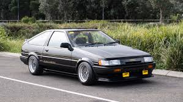
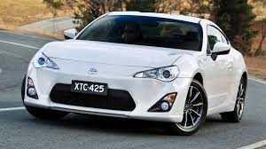
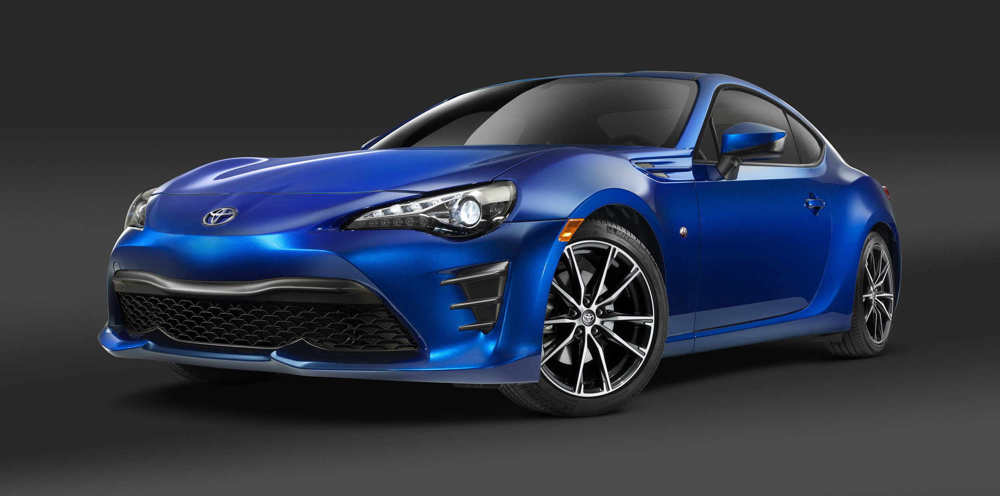
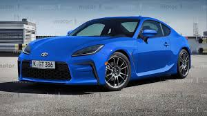
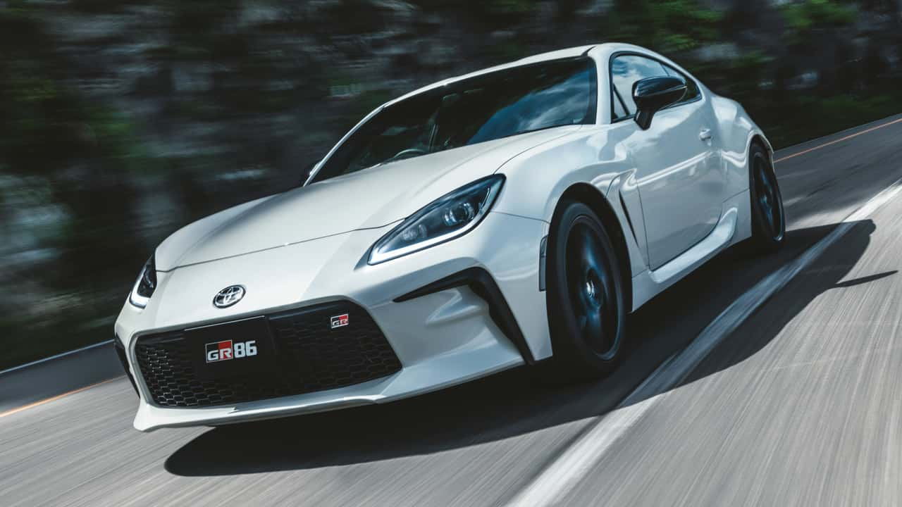

El Toyota AE86 nació como parte de la quinta generación del Corolla. Su clave estaba en su configuración única para su época: motor delantero y tracción trasera, en una era donde la mayoría de compactos ya eran tracción delantera.
Usaba un motor 1.6L 4A-GE de 128 hp, pesaba menos de 1.000 kg y fue conocido por su equilibrio perfecto. Ganó notoriedad gracias al drift y su aparición en la cultura popular, como el anime Initial D.
En colaboración con Subaru, Toyota desarrolló un deportivo ligero y accesible: el GT86. Su nombre homenajeaba al AE86 y su filosofía era ofrecer diversión al volante, sin exceso de potencia.
Contaba con un motor Subaru bóxer 2.0L de 200 hp, tracción trasera, bajo centro de gravedad y una carrocería coupé. Fue ampliamente elogiado por su manejo y equilibrio.
Recibió mejoras en chasis, electrónica y un diseño más agresivo. Se enfocó aún más en la experiencia del conductor, con pequeños ajustes para mejorar la respuesta dinámica y la sensación del volante.
Con el respaldo de Gazoo Racing (GR), la división deportiva de Toyota, se lanza una versión completamente renovada. Ahora con motor 2.4L bóxer de 231 hp y mejor par motor (250 Nm), permitiendo acelerar de 0 a 100 km/h en 6.3 segundos.
La rigidez estructural aumentó un 50%, el diseño es más refinado y el interior incluye más tecnología. Pero conserva lo más importante: peso ligero, tracción trasera y emoción pura.
La versión más reciente del GR86 continúa la tradición, refinando aún más la fórmula. Incorpora mejoras en suspensión, sistema multimedia actualizado y un diseño aún más agresivo.
Su relación peso-potencia lo mantiene como uno de los mejores deportivos de acceso del mundo. Es ideal para pista, drift o conducción diaria apasionada.
